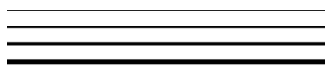

Comment fonctionne notre cerveau pour les apprentissages ?
Le cerveau est l’organe principal du système nerveux.
Le stress face à une épreuve
Les mécanismes de l'apprentissage
La plasticité du cerveau
L'importance du sommeil
Le cerveau est l’organe principal du système nerveux.
Il faut savoir que notre cerveau peut traiter entre 5000 et 6000 décisions de la vie quotidienne
par jour par exemple:
dois-je faire la vaisselle maintenant ? Dois-je mettre un pull ?
Une partie de ces décisions sont prises de manière automatique. Ainsi quelquefois, notre cerveau fonctionne en mode automatique.
Notre cerveau est plus ou moins autonome, ce qui a permet de gérer beaucoup de situations. Un danger peut mettre notre cerveau en situation de stress et venir le perturber. Par exemple, lorsqu'un élève se lève pour aller écrire au tableau, cela peut lui faire perdre ses moyens. Il faut donc apprendre à gérer ce stress.
A savoir, qu’un cerveau traite les informations perçues par des récepteurs sensoriels (les yeux, les oreilles, la peau, le nez...). Cela fait beaucoup d'informations en même temps.
Le stress face à une épreuve

Le cerveau ne fait pas la différence entre un souvenir réel et un souvenir imaginé. Donc, il fonctionne souvent à nos dépens. Ainsi un élève qui s’imagine ou rêve, que son contrôle va mal se passer, il va paniquer puis perdre ses moyens avant même de commencer le test.
3 types de stress : la fuite, la lutte et l'inhibition:
- La fuite : une personne agitée, je ne peux pas, je ne suis pas bien, ...
- La lutte : une attitude agressive, Quoi ?, Comment ?, ...
- L'inhibition : une attitude déprimée, force inertie, tu ne te rends pas compte ...
Toutes les émotions influent sur nos capacités cognitives. Avec une bonne préparation et quelques rituels peuvent aider à gérer ses contres performances. Comme le font les sportifs de haut niveau.
Pour avoir plus d'informations, voici un lien vers une conférence : Comprendre notre grâce aux neurosciences
Les mécanismes de l'apprentissage

Tout d'abord par l'attention est la porte d'entrée des informations que notre cerveau perçoit.
voici un test d'attention pour s'amuser à tester votre capacité d'attention.
Les attracteurs de l’attention sont le sensoriel (bruit, vision, contact…), les
émotions (une personne en colère, qui pleure...),
la nouveauté, la surprise, les motivations personnelles.
La capacité de l’attention est de pouvoir inhiber les informations non pertinentes
pendant un long moment afin de pouvoir maintenir l’attention sur le cours.
En suite, la mémoire de travail permet de maintenir l’information, la sélectionner et la manipuler pendant un court instant (la mémoire RAM d’un ordinateur si l’on peut dire). Cela demande beaucoup d'énergie est fait donc chute la capacité d'attention.
L'étape suivante est la gravure (encodage) de l'information de manière consciente ou inconsciente. Voici un lien pour en savoir plus : Les mécanismes cérébraux des apprentissages.
La mémoire, c’est comme un trait que l’on trace dans notre cerveau. Plus on passe dessus mieux on s’en souvient.
La plasticité du cerveau
À chaque fois que l'on apprend quelque chose de nouveau, notre cerveau crée de nouvelles
liaisons (chemin).
La neuroplasticité, c'est la capacité du cerveau à se modifier et changer sa structure.
Le cerveau peut se modifier à tous âges. Par exemple, l'apprentissage d'un instrument de musique, d'un chant, d'un sport...
Autre exemple, lorsque l'on utilise un trajet quotidien, nous le faisons de manière automatique. Quand, soudain la route est fermée pour cause de travaux. Il faut donc changer de trajet pour arriver à notre destination. Il faut donc emprunter un nouveau chemin.
Au début, on réfléchit et hésite au chemin que l'on doit prendre. Puis, à force de parcourir ce nouveau trajet, on en prend l'habitude.
En restant actif , on favorise la neuroplasticité. Il faut comparer notre cerveau à un muscle. Ainsi, la qualité et la quantité de sommeil , le repos , boire de l'eau, manger équilibre permettent de maintenir nos fonctions cognitives en bon état de fonctionnement.
L'importance du sommeil
C'est pendant le sommeil que l'on consolide les apprentissages.
Le cerveau fait une sorte de replay de la journée.
Ensuite, il trie les informations et il supprime les savoirs qu'il estime inutiles.
Toutes perturbations ou manque de sommeil va donc freiner la mémorisation.